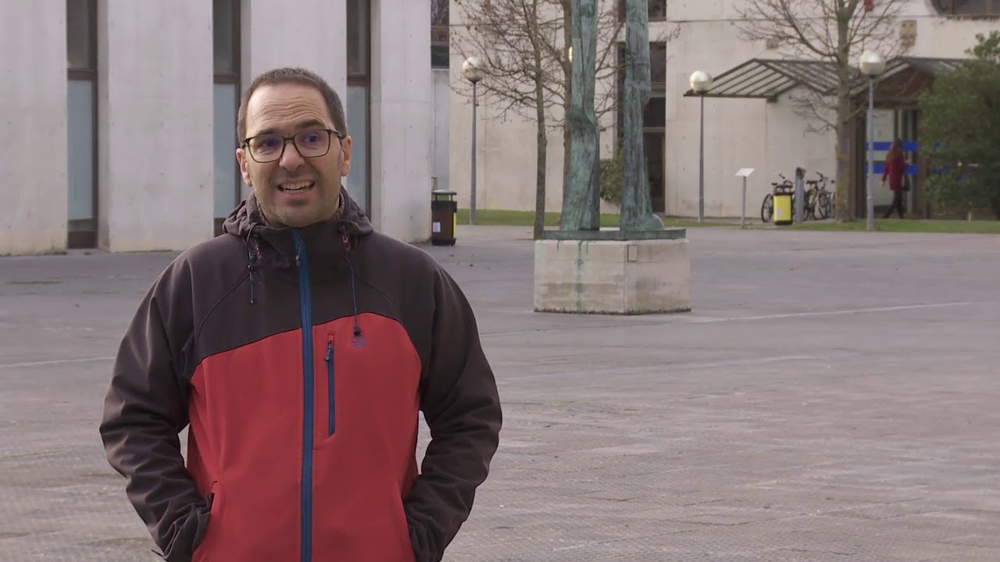
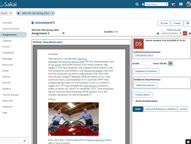
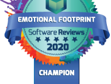
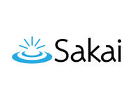
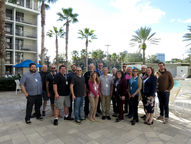

Sakai News
Social Buzz
LevelUp!, a new Food Bank Leadership Program, is utilizing Sakai to help train Food Bank leaders in next-level leadership skills.
Mar 10, 20212 min read
Sakai's annual online conference is among the best at providing accessibility for low-vision participants.
Dec 16, 20201 min read
Portfolios can offer a more comprehensive view of student knowledge and skills. Since portfolios are collections of student work over time,
Oct 13, 20203 min read
In Part 2, we will discuss a few ways you can use game dynamics to both engage and assess learners.
Oct 1, 20204 min read
Many organizations now recognize that Sakai is an effective tool for teaching and learning in settings outside higher education.
Sep 25, 20203 min read
Incorporating alternative assessment strategies can provide a valuable counterbalance to high stakes exams.
Sep 21, 20203 min read

Sakai is extensively used at universities in Spain. Professor Aitzol Lasa at Universidad Publica de Navarro leverages Sakai to ensure...
Sep 15, 20201 min read
Notre Dame created a site in Sakai that would introduce the campus rules for safe re-entry.
Sep 8, 20201 min read
Walsh University has won an award recognizing the University's innovative use of Sakai for all-remote learning during the pandemic.
Aug 4, 20202 min read

Hot off of the virtual presses, Sakai 20 is now available and it is packed with great new features! Here are just a few highlights. Read...
May 19, 20203 min read

Sakai ranked number one in 23 of 25 areas in a new study by Info-Tech Research Group.
May 11, 20201 min read
With COVID 19 emergency contingencies in place, most institutions are now offering all their classes online. So, how can you make the...
Apr 7, 20205 min read
As the Coronavirus spreads and public health officials increasingly recommend against large gatherings of people, it’s more important...
Mar 9, 20208 min read
Recently, Sakai's flexibility and robust architecture helped Duke University deal with the coronavirus in China.
Mar 9, 20201 min read

In Fall 2019, Pepperdine University held a Technology and Learning conference for its faculty. Shown at one of the general sessions was...
Feb 4, 20201 min read
The University of Dayton is using its Sakai service to help promote its Green Dot program, which aims to reduce sexual violence
Sep 21, 20191 min read
During the LAMP Consortium’s annual “LAMP Camp” conference in July, the group explored the new Rubrics tool now available in Sakai 2019.
Aug 29, 20192 min read
Professor Sebastian Ruffo was recently awarded the Apereo ATLAS Award for his use of Sakai in teaching a spoken French course at Ontario's R
Aug 13, 20191 min read
By Martin Ramsay, LAMP Consortium Susan McGreevy-Nichols, Executive Director of the National Dance Education Organization (NDEO)...
Aug 1, 20192 min read
In an attempt to make Sakai’s user experience better and to make the software more efficient, developers have implemented a program to...
May 29, 20192 min read
One of the largest private universities in Japan, Hosei University, has renewed its contract with a leading Sakai vendor in Japan and a...
May 10, 20191 min read

Sakai for 2019 was released on Thursday, March 21, 2019, with many new features and upgrades developed in direct response to faculty and...
Apr 8, 20191 min read
When an institution chooses open source software, they choose to be part of an active community of innovators. Open source software such...
Mar 10, 20191 min read
When students review each other’s papers, the quality of their work improves dramatically, according to pedagogy expert Joe Hirsch....
The Sakai Community has just published a new three-year strategic roadmap to steer the ongoing, energetic, rapid innovation that is the...
If you’re a faculty member, have been a faculty member, or know a faculty member, you know that one of faculty’s least favorite teaching...
Feb 14, 20192 min read

While most of the North braced for record-breaking frigid temperatures, a small but mighty group of Sakaigers traveled South to meet up...
Sakai is one of the first LMS platforms to achieve a brand-new certification for an interoperability standard called LTI Advantage,...